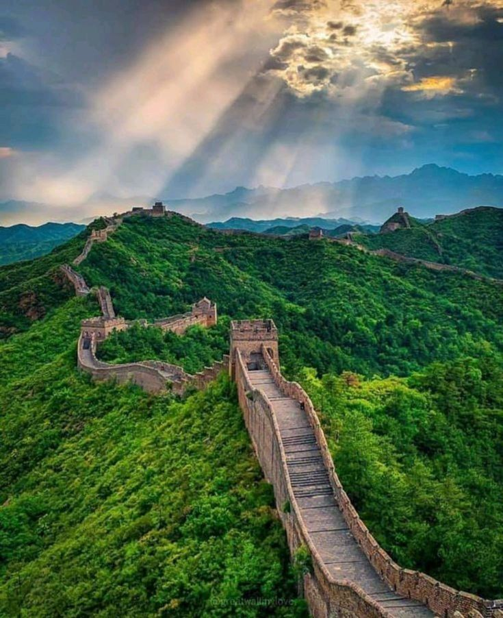
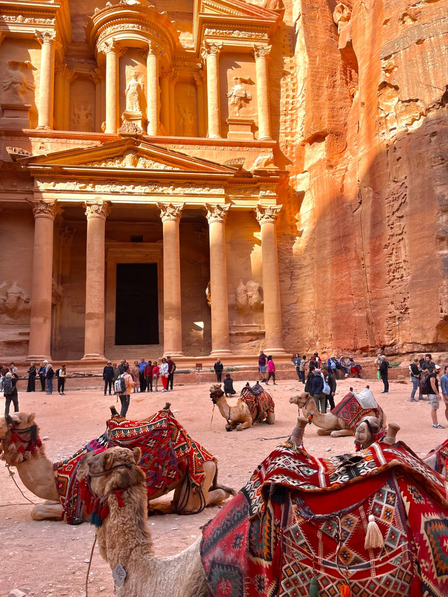
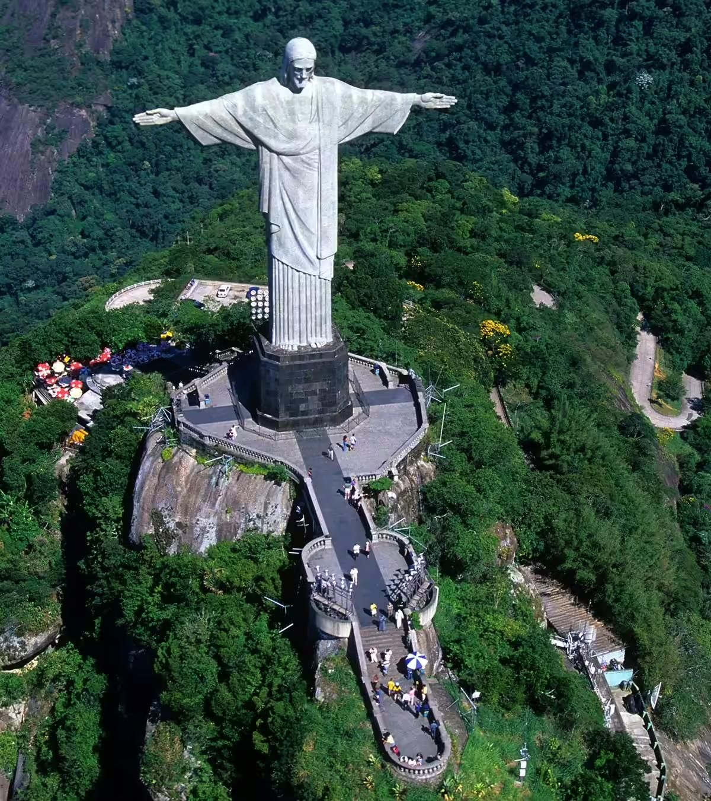
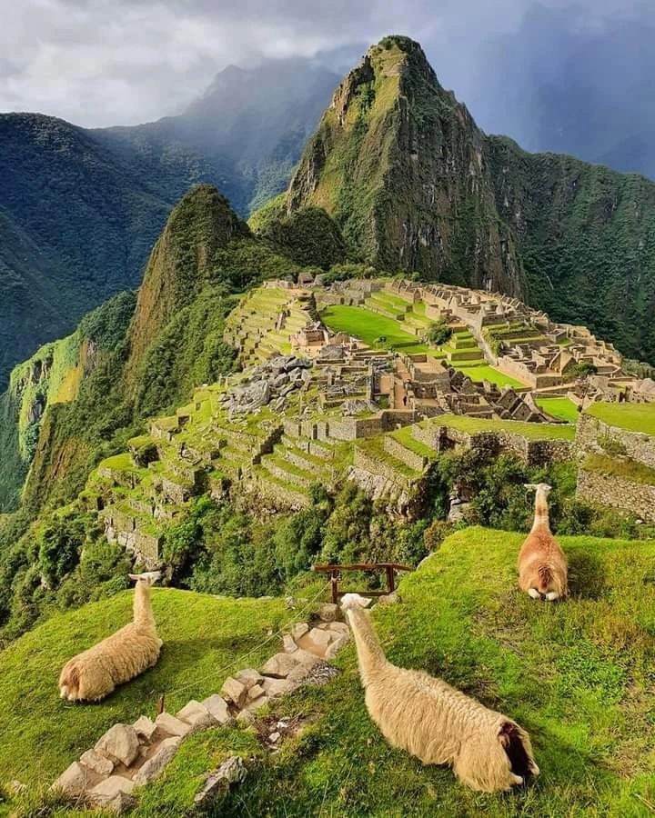
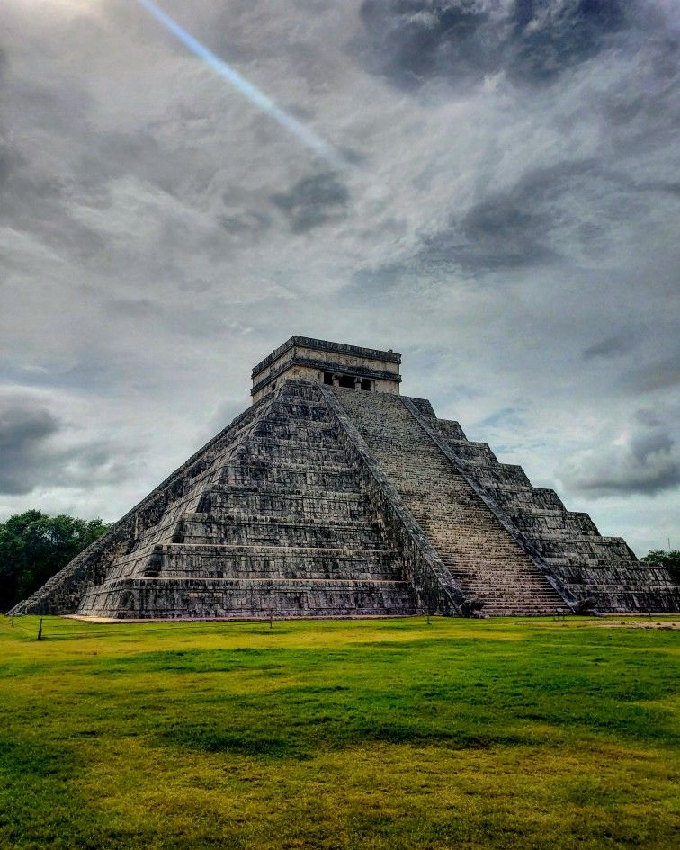
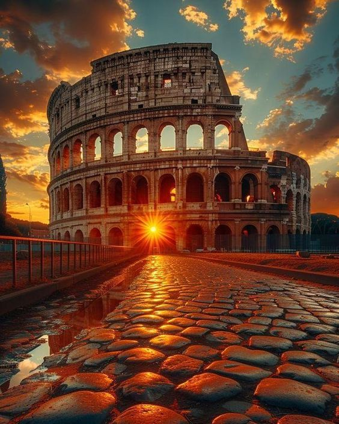
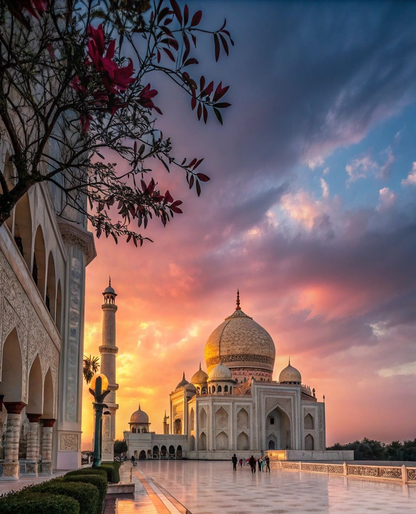

Discover the Legacy of the Seven Wonders
Journey through time and uncover the remarkable stories behind the world’s most iconic architectural masterpieces. Each wonder carries centuries of culture, engineering brilliance, and unforgettable historical significance — waiting for you to explore.

The Great Wall of China is one of the most iconic architectural achievements in human history. Built over
several dynasties, mainly during the Ming Dynasty (1368–1644),Its original purpose was to protect Chinese states from northern
invaders, especially the Mongols.
The wall was not a single structure but a collection of fortifications, watchtowers, and garrisons built
over centuries. Thousands of laborers, soldiers, farmers, and even prisoners contributed to its
construction. Today, the Great Wall stands as a symbol of ancient China’s engineering brilliance and the
determination of its people.
Other purposes of the Great Wall have included border controls, regulation or encouragement of trade and the control of immigration and
emigration. Furthermore, the defensive characteristics of the Great Wall were enhanced by the construction
of watch towers, troop barracks, garrison stations, signaling capabilities through the means of smoke or
fire, and the fact that the path of the Great Wall also served as a transportation corridor.

Petra, often called the “Rose-Red City,” was the capital of the Nabatean Kingdom around the 4th century BC, Petra flourished as a major trade hub where merchants from Arabia,
Egypt, and the Mediterranean exchanged goods like spices, silk, and incense.
The city is famous for its breathtaking structures carved directly into red sandstone cliffs — the most
iconic being "Al-Khazneh" (The Treasury). Petra declined after natural disasters and shifting trade routes,
eventually becoming a lost city until its rediscovery in 1812. Today, it is considered one of the greatest
archaeological treasures of the ancient world.
The site remained unknown to the western world until 1812, when it was introduced by Swiss explorer Johann
Ludwig Burckhardt. It was described as “a rose-red city half as old as time” in a Newdigate Prize-winning
poem by John William Burgon. UNESCO has described it as “one of the most precious cultural properties of
man’s cultural heritage”. Petra was named amongst the New7Wonders of the World in 2007 and was also chosen
by the Smithsonian Magazine as one of the “28 Places to See Before You Die.

Christ the Redeemer is a monumental statue standing atop Mount Corcovado in Rio de Janeiro, Brazil.
Completed in 1931, the statue rises 98 feet tall with its arms stretched wide, symbolizing peace and the
welcoming nature of the people of Brazil.
Designed by Brazilian engineer Heitor da Silva Costa and sculpted by French artist Paul Landowski, the
statue is made of reinforced concrete and soapstone. It has survived lightning, storms, and time, becoming
one of the strongest cultural and religious symbols in the world. Today, millions of visitors travel to Rio
each year to witness this breathtaking landmark overlooking the city.
The statue weighs 635 metric tons (625 long, 700 short tons), and is located at the peak of the 700-metre
(2,300 ft) Corcovado mountain in the Tijuca Forest National Park overlooking the city of Rio. A symbol of
Christianity across the world, the statue has also become a cultural icon of both Rio de Janeiro and Brazil,
and is listed as one of the New Seven Wonders of the World. It is made of reinforced concrete and soapstone,
and was constructed between 1922 and 1931.

Machu Picchu, built in the mid-1400s, was an Incan royal estate hidden deep in the Andes Mountains of Peru. Its exact purpose remains a mystery, but historians believe it may have served as a ceremonial site or a retreat for Incan emperors. Made entirely of precisely cut stone blocks, the city includes temples, terraces, observatories, and houses — all constructed without mortar. After the fall of the Inca Empire, Machu Picchu was abandoned and remained unknown to the outside world until its rediscovery in 1911. Today, it stands as one of the most incredible archaeological achievements of South America. Machu Picchu was built in the classical Inca style, with polished dry-stone walls. Its three primary structures are the Inti Watana, the Temple of the Sun, and the Room of the Three Windows. Most of the outlying buildings have been reconstructed in order to give tourists a better idea of how they originally appeared. By 1976, thirty percent of Machu Picchu had been restored and restoration continues.
Download MS
Chichén Itzá was one of the greatest Mayan cities, flourishing between the 9th and 12th centuries. Located
in the Yucatán Peninsula of Mexico, it became a political, economic, and religious center where thousands
gathered for rituals and ceremonies.
The most famous structure is El Castillo (The Temple of Kukulcán) — a pyramid designed with such precision
that during the equinox, a shadow appears on the steps resembling a serpent descending the pyramid. Chichén
Itzá reflects the scientific brilliance of the Maya in astronomy, mathematics, and architecture.
The event has been very popular, but it is questionable whether it is a result of a purposeful design.
Each of the pyramid’s four sides has 91 steps which, when added together and including the temple platform
on top as the final “step”, produces a total of 365 steps (which is equal to the number of days of the Haab’
year).
The structure is 24 m (79 ft) high, plus an additional 6 m (20 ft) for the temple. The square base measures
55.3 m (181 ft) across.

Built between AD 70–80, the Colosseum in Rome is the largest amphitheater ever constructed. It was the heart
of Roman entertainment, hosting gladiator battles, public ceremonies, and even dramatic
sea battles when the arena was flooded.
The Colosseum could hold up to 50,000 spectators and featured advanced engineering such as trapdoors, and a complex underground system. Despite earthquakes and centuries of damage, it remains one of
the strongest symbols of ancient Rome’s power, innovation, and architectural skill.
The Colossus did eventually fall. By the year 1000 the name
“Colosseum” had been coined to refer to the amphitheatre. The statue itself was largely forgotten and only
its base survives, situated between the Colosseum and the nearby Temple of Venus and Roma. In Italy, the amphitheatre is still known as il
Colosseo, and other Romance languages have come to use similar forms such as Coloseumul (Romanian), le
Colisée (French), el Coliseo (Spanish) and o Coliseu (Portuguese).

The Taj Mahal, completed in 1653, was built by Mughal Emperor Shah Jahan in memory of his beloved wife
Mumtaz Mahal. Often described as the greatest symbol of love, the white-marble mausoleum stands on the banks
of the Yamuna River in Agra, India.
The structure is a masterpiece of Mughal architecture, featuring intricate inlay work, symmetrical gardens,
and a shining marble dome that reflects different colors throughout the day. Thousands of artisans,
sculptors, and craftsmen worked for more than 20 years to bring the emperor’s vision to life. Today, the Taj
Mahal is admired worldwide as one of the most beautiful buildings ever created.
The Taj Mahal was designated as a UNESCO World Heritage Site in 1983 for being “the jewel of Muslim art in
India and one of the universally admired masterpieces of the world’s heritage”. Described by Nobel laureate
Rabindranath Tagore as “the tear-drop on the cheek of time”, it is regarded by many as the best example of
Mughal architecture and a symbol of India’s rich history. The Taj Mahal attracts 7–8 million visitors a
year.